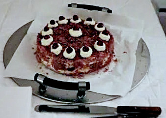

| Zutaten: | |
| Tortenboden dunkel, 2x geschnitten | |
| 0.3 dl | Kirsch |
| 3 El | Johannisbeer- oder Himbeergelee |
| 250 g | gefrorene Himbeeren |
| 8 dl | Rahm |
| 1 Beutel | Rahmfestiger |
| 1 Päckli | Vanillezucker |
| 200 g | Schokolade oder Schokoladenstreusel |
Zubereitungszeit ca. 15 Minuten.
Dunkler Tortenboden
Unterste Lage mit 4 Esslöffeln Kirsch beträufeln und mit 3 Esslöffel Gelee bestreichen.
Die Himbeeren bis auf 12 schöne Beeren antauen (am besten geht es wenn sie noch etwas hart sind) auf dem bestrichenen Tortenboden verteilen.
Rahm und Festiger steif schlagen und kurz vor Ende den Vanillezucker beigeben. Ein Drittel von der Rahmfüllung auf den Boden verteilen, die Himbeeren sollten bedeckt sein.
Mittlerer Boden darauflegen und leicht andrücken.
Rest vom Kirsch darauf träufeln und ein Viertel vom Rahm darauf verteieln.
Dann den die oberste Schicht Tortenboden vorsichtig darauflegen und mit Rahm bedecken.
Schokostreusel auf der Oberseite verteilen und mit restlichem Rahm verzieren und den Rand der Torte bestreichen.
Rest der Schokostreusel an den Tortenrand applizieren und die 12 Himbeeren (oder kandierte Kirschen) zum Verzieren auf die Rahmhäubchen setzen. Fertig.
Sandra Keller
Hat ausgezeichnet geschmeckt! RE Dezember 2014